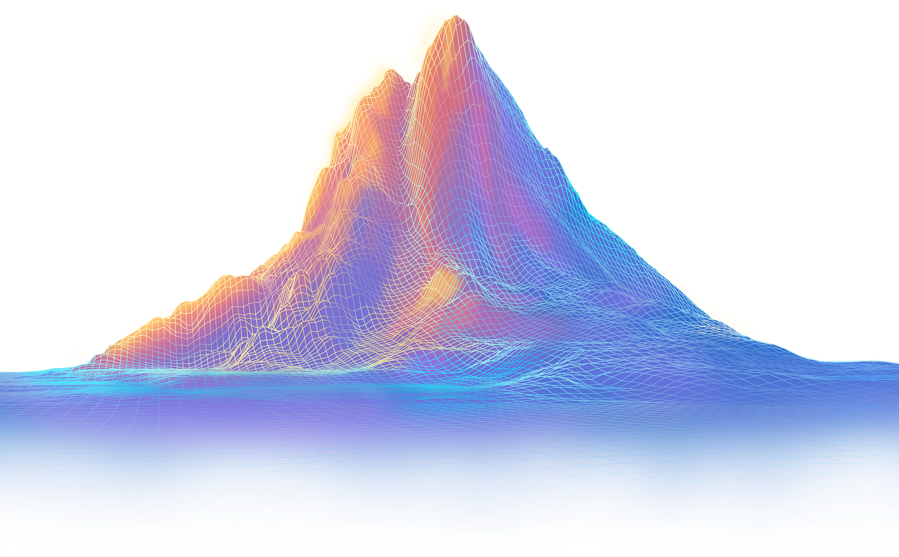
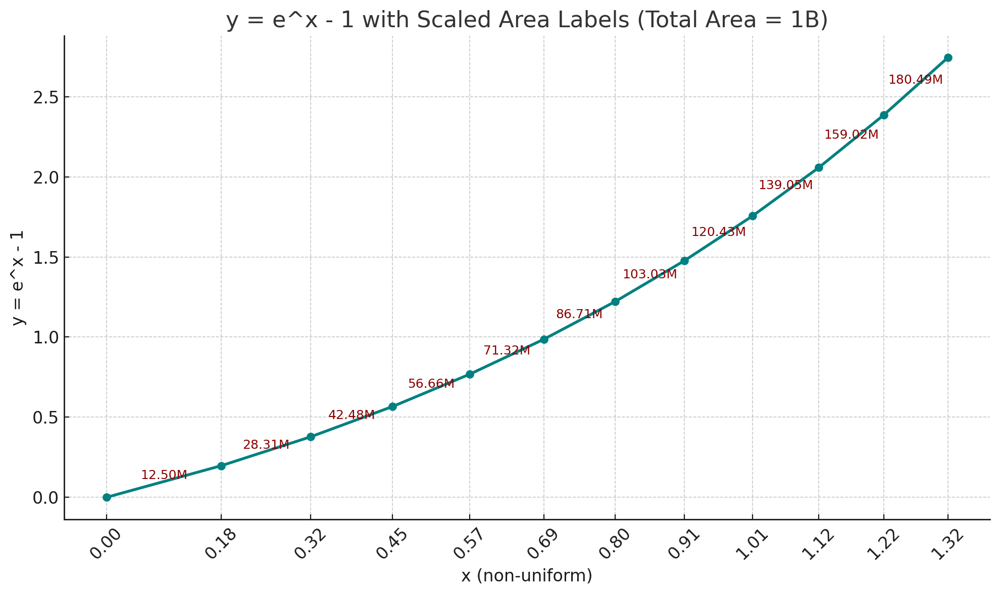

Karma 的概念源⾃因果法则，强调善⾏带来积极影响，恶⾏可能导致负⾯后果。这⼀思想最 早起源于印度哲学，认为⼈的⾏为不仅影响当下，还可能塑造未来
在现代社会，karma 这⼀词汇被⼴泛使⽤，不仅象征着⾏为带来的回馈，也常⽤于社交平 台，作为衡量⽤户贡献和互动的⼀种⽅式。⽆论是在哲学、道德，还是⽇常⽣活中，karma 都提醒⼈们：你的每⼀次善⾏，都可能影响世界，也可能影响你⾃⼰。
Karma 币——善⾏的象征Karma 币是⼀种⽤于记录和象征善⾏的⾮⾦融性数字资产，它承载着“善⾏值得被认可”的理 念。我们希望，每⼀份善意都能被看见，每⼀位⾏善者都能被激励，从⽽⿎励更多⼈投⾝公 益。
然⽽，全球每天都在发⽣⽆数善⾏，从帮助弱势群体到⽀持社区发展，这些⾏为往往难以量 化和记录。Karma 采⽤了创新的 Mint 机制和社区奖励体系，使其成为善⾏的象征，⽽⾮交 易⼯具，从⽽保持其纯粹的公益属性，与“karma”的原始意义保持⼀致。
Karma 币的Mint机制Karma 币是⼀种⽤于记录善⾏的⾮⾦融性数字资产，所有 Karma 币的铸造（Mint）都直接源 于公益⾏为，确保其与“善⾏”概念保持⼀致。Karma 没有预挖）Pre-mine ，也不⽀持任何 形式的付费铸造（Minting）。 唯⼀的⽅式是通过公益捐赠，从⽽形成⼀个去中⼼化的、透 明的善⾏记录系统。
为什么选择捐赠作为 Mint 机制？ 捐赠⾏为被选定为 Karma 的 Mint 触发条件，主要基于以下因素：
根据2022 年美国慈善捐赠统计，全年慈善捐赠总额达到4,993 亿美元，具体分布如下：
• 宗教：占⽐约28%
• 教育：占⽐约14%
• ⼈类服务：占⽐约13%
• 医疗保健：占⽐约9%
• 公共社会福利：占⽐约8%
• 国际事务：占⽐约6%
• 艺术、⽂化和⼈⽂：占⽐约 5%
• 环境和动物保护：占⽐约 3%
• 其他：占⽐约14%
根据历史数据，美国的慈善捐赠通常占全球捐赠总额的40%-45%，据此估算，2022年全球 慈善捐赠总额约为 1.2 万亿美元。如此庞⼤的公益⾏动，不应仅停留在传统记录⽅式，⽽应 被更好地在区块链上永久存证，让善⾏可见，让公益更透明。
Karma 的 Mint 过程为了确保 Karma 仅⽤于记录真实的公益捐赠⾏为，团队采取了透明、公正的捐赠验证流程：
1. 取得授权：Karma 团队与募捐主办⽅或个⼈取得联系。获得捐助者、受捐者及主办⽅的同意，授权 Karma 参与此次捐款记录。
2. 见证捐款事件：捐款⾏为发⽣时，Karma团队不介⼊原流程，仅作为见证者记录捐赠⾦额，以美元现价计算。
3. 铸造Karma：Karma 团队按照路线图 以及捐赠⾦额Mint 出相应数量的 Karma 币，分配给相关参与⽅（详见后⽂）。
4. 公益传播：在募捐主办⽅正式发布捐款新闻后，Karma 团队将在公开渠道同步相关信息，提升公益⾏动的社会关注度，增强其传播效应。
这⼀机制确保了 Karma 不是“购买”或“交易”的代币，⽽是⼀种⽤于记录和象征善⾏的数字标识，强化了其公益属性，并使其远离⾦融监管风险。
Karma的发⾏总量10亿
Karma Mint 计算⽅法Karma 的 mint 分为 11 个批次，总发⾏量为 10 亿。我们采⽤了一条温柔上扬的指数曲线，来描绘⼀个机构从萌芽到崛起的过程。
曲线的起点缓慢，仿佛⼀个新⽣组织在寂静中扎根，如同细胞悄然分裂、思想缓慢酝酿，外界⼏乎⽆感。但随着时间推移，每⼀步的努⼒开始累积影响，推动曲线缓缓提速。正如阳光照进森林，藤蔓开始攀爬、枝叶逐渐舒展，影响⼒也在悄然之间，从⼀点星⽕扩散为燎原之势。
在数学上，我们使⽤指数函数 y = e^x - 1 来刻画价值的⾃然增长，并通过⾮均匀划分的⽅式定义每个批次的横轴位置：
x_i = L * (i / n)^0.83
其中，L 是总长度，n 是批次数量，i 为当前批次编号，指数 0.83 控制了批次间距的分布节奏——通过“前宽后窄”的横轴划分，有效缓和了指数函数在后期的剧烈陡升，使整体⾯积增⻓更加平滑⽽有序。
这样的设计既保证了早期批次拥有充⾜的空间与意义，也让整个系统更贴近真实世界中“积累—放⼤—扩散”的⾃然成长节奏。
在每个批次中，每单位的捐赠⾦额对应的 Karma 产出量也随着递减（难度上升）。

| 批次 | Karma 对应捐赠额（USD） | mint 数⽬ | 批次总捐赠额（USD） | 合计总捐赠⾦额（USD） |
|---|---|---|---|---|
| 1 | 0.08 | 12,500,000 | 1,000,000 | 1,000,000 |
| 2 | 0.16 | 28,310,000 | 4,530,000 | 5,530,000 |
| 3 | 0.32 | 42,480,000 | 13,590,000 | 19,120,000 |
| 4 | 0.64 | 56,660,000 | 36,260,000 | 55,390,000 |
| 5 | 1.28 | 71,320,000 | 91,280,000 | 146,670,000 |
| 6 | 2.56 | 86,710,000 | 221,980,000 | 368,650,000 |
| 7 | 5.12 | 103,030,000 | 527,530,000 | 896,180,000 |
| 8 | 10.24 | 120,430,000 | 1,233,220,000 | 2,129,400,000 |
| 9 | 20.48 | 139,050,000 | 2,847,740,000 | 4,977,140,000 |
| 10 | 40.96 | 159,020,000 | 6,513,560,000 | 11,490,690,000 |
| 11 | 81.92 | 180,490,000 | 14,785,380,000 | 26,276,070,000 |
跨批次计算：在某些情况下，单笔⼤额捐赠可能会跨越多个 Mint 批次，这种情况下，按照 每个批次的标准分别计算 Karma 分配，确保公平性。
⽰例：
假设当前在 第 5 批次（1 Karma = $1.28） 进⾏ Mint，⽽某笔捐款⾦额较⼤，导致部分 Mint 额度进⼊ 第 6 批次（1 Karma = $2.56），那么：
• 该笔捐款会按照第 5 批次规则计算对应部分的 Karma
• 超出的部分则按照第 6 批次规则计算 Mint 量
Mint 难度递增的⽬的
• 确保早期参与者的激励，同时⿎励长期捐赠
• 控制供应量，避免通胀影响 Karma 的公益价值
• 通过计算透明化，避免⼈为操控 Mint 规则
这⼀模式进⼀步强化了 Karma 作为公益记录⼯具的属性，⽽⾮投机资产，从⽽降低⾦融监 管风险。
Karma的分配Karma 仅通过Mint（铸造）这⼀单⼀机制产⽣，每次 Mint ⽣成的 Karma 都按照固定⽐例进 ⾏分配。这⼀规则确保Karma 只与公益⾏为挂钩，避免因⼆级市场操作或预挖机制导致不 公平分配。
Karma慈善基⾦的核⼼⽬标是通过Karma作为公益激励⼯具，在更⼴泛的范围内促进善⾏。 基⾦运作采⽤完全透明的⽅式，所有资⾦流动和⽀出均记录在区块链上，以确保100%的透 明度，提升公众信任。
公益守护NFT（Charity Guardian NFT） 是⽤于基⾦治理的关键⼯具，赋予持有者对基⾦ 公益资助提案的投票决策权。购买NFT赋予持有者参与治理的权益。
以上合并确保慈善基⾦和 NFT 治理机制紧密结合，并明确公益守护 NFT 的公益属性及治理功能，避免⾦融风险。
公益声誉系统为了进⼀步激励公益⾏为，Karma 计划推出 公益声誉系统，该系统将基于 Karma 代币的贡 献，构建⼀个透明、公正的声誉评分机制。
Karma钱包是⼀个专门为公益⽣态设计的多功能数字资产管理⼯具，旨在实现公益领域内的 资⾦安全管理、⾃由交流及消费便利。
功能特点
公益应⽤场景
通过Karma钱包，捐赠者不仅能追踪⾃⼰的捐赠去向，还可与公益项⽬直接沟通，确保善款 ⽤途透明明确。受捐者则能更快捷地获得援助资⾦，并及时反馈资⾦使⽤情况，形成公益⽣ 态内的良性互动。
Karma钱包不仅增强了公益资⾦的流动性，也提升了公益⾏为的效率与可信度，是Karma⽣ 态中实现"善⾏可见，回馈可证"的重要⽀撑⼯具。
总结Karma 构建了⼀套去中⼼化的公益激励⽣态，通过创新的 Mint 机制，确保所有 Karma 代币均来源于真实的公益捐赠⾏为，彰显公益透明、公正的理念。Karma 代币的设计有效避免了⾦融属性，专注于记录和激励善⾏。
慈善基⾦与公益守护 NFT（Charity Guardian NFT）的结合，使基⾦的治理更加透明和民主化。通过购买 NFT，社区成员获得对公益资助项⽬的投票决策权，实现社区⾃治与公益使命的紧密结合。
此外，Karma 钱包的推出进⼀步加强了⽣态系统的实⽤性。钱包提供了安全的数字资产管理、即时沟通、法币兑换和消费⽀付功能，显著提升了捐赠者和受捐者之间的互动与公益资⾦的实效。
展望未来，Karma 将持续完善和扩展公益⽣态的各项功能，致⼒于建⽴⼀个透明、可信赖且⾼效的全球公益⽹络，让每⼀次善⾏都能清晰可见、每⼀份回馈都真实可证。
The concept of Karma comes from the law of cause and effect, which emphasizes that good deeds bring positive effects, while bad deeds may lead to negative consequences. This idea originated from Indian philosophy, which believes that people's behavior not only affects the present, but also may shape the future.
In modern society, the word karma is widely used. It not only symbolizes the rewards brought by behavior, but is also often used on social platforms as a way to measure user contributions and interactions. Whether in philosophy, morality, or daily life, karma reminds people that every good deed you do may affect the world and yourself.
Karma Coin - A Token of Good DeedsKarma coin is a non-financial digital asset used to record and symbolize good deeds. It carries the idea that "good deeds deserve recognition". We hope that every bit of kindness can be seen and every doer of good deeds can be motivated, thereby encouraging more people to invest in public welfare.
However, countless good deeds are happening around the world every day, from helping the disadvantaged to supporting community development, and these behaviors are often difficult to quantify and record. Karma uses an innovative Mint mechanism and community reward system to make it a symbol of good deeds rather than a trading tool, thereby maintaining its pure public welfare attributes and being consistent with the original meaning of "karma".
Karma Coin Mint MechanismKarma is a non-financial digital asset used to record good deeds. All Karma coins are minted directly from public welfare activities to ensure that they are consistent with the concept of "good deeds". Karma has no pre-mine and does not support any form of paid (Minting). The only way is through public welfare donations, thus forming a decentralized and transparent system for recording good deeds.
Why choose donation as the Mint mechanism? Donation was chosen as Karma's Mint trigger based on the following factors:
According to the 2022 U.S. charitable donation statistics, the total amount of charitable donations for the year reached US$499.3 billion, with the following distribution:
• Religion: ~28%
• Education: ~14%
• Human Services: ~13%
• Healthcare: ~9%
• Public and Social Welfare: ~8%
• International Affairs: ~6%
• Arts, Culture, and Humanities: ~5%
• Environmental and Animal Protection: ~3%
• Others: ~14%
Based on historical data, the United States typically accounts for 40%-45% of global charitable donations. Accordingly, the estimated total global charitable donations in 2022 amounted to approximately 1.2 trillion USD. Such a vast philanthropic effort should not be limited to traditional record-keeping methods. Instead, it should be permanently recorded on the blockchain, ensuring visibility for good deeds and greater transparency in philanthropy.
Karma's Minting ProcessTo ensure that Karma is solely used to record genuine charitable donations, the team follows a transparent and fair donation verification process:
1. Authorization: The Karma team contacts the fundraising organizers or individuals to obtain consent from donors, beneficiaries, and organizers, granting Karma permission to record the donation.
2. Witnessing the Donation Event: During the donation process, the Karma team does not interfere but acts as a witness, recording the donation amount in USD equivalent value.
3. Minting Karma: The Karma team mints the corresponding number of Karma tokens according to the roadmap and the donation amount, distributing them to relevant participants (see details below).
4. Public Awareness: Once the fundraising organizers officially announce the donation event, the Karma team publicly shares the relevant information, increasing social awareness and maximizing the impact of the charitable action.
This mechanism ensures that Karma is not a tradable or purchasable token but a digital symbol representing acts of kindness, reinforcing its philanthropic nature while mitigating financial regulatory risks.
Karma Token Total SupplyTotal Supply: 1 billion
Karma Minting MethodKarma minting occurs in 11 batches, with a total issuance of 1 billion tokens. The process follows a gently rising exponential curve, symbolizing an organization’s journey from inception to growth.
At first, the curve is slow, like a newly formed organization taking root in silence, much like cells dividing quietly or ideas fermenting with little external recognition. However, as time progresses, efforts accumulate, momentum builds, and the curve gradually accelerates—similar to vines growing in sunlight, expanding their influence from a tiny spark to a wildfire.
Mathematically, we use the exponential function to model this organic value growth:
y = e^x - 1
The batch distribution along the horizontal axis is defined as:
x_i = L * (i / n)^0.83
where:
This “wide first, narrow later” distribution smooths the steep rise of the exponential curve in later phases, ensuring a balanced and orderly growth pattern.
Each batch also introduces progressively decreasing Karma output per donation unit (increasing minting difficulty), ensuring sustainable value distribution.
This design ensures that early batches have sufficient space and meaning, while the entire system aligns with the real-world rhythm of accumulation, amplification, and diffusion.
| Batch | Karma per Donation (USD) | Minted Amount | Batch Total Donation (USD) | Cumulative Total Donation (USD) |
|---|---|---|---|---|
| 1 | 0.08 | 12,500,000 | 1,000,000 | 1,000,000 |
| 2 | 0.16 | 28,310,000 | 4,530,000 | 5,530,000 |
| 3 | 0.32 | 42,480,000 | 13,590,000 | 19,120,000 |
| 4 | 0.64 | 56,660,000 | 36,260,000 | 55,390,000 |
| 5 | 1.28 | 71,320,000 | 91,280,000 | 146,670,000 |
| 6 | 2.56 | 86,710,000 | 221,980,000 | 368,650,000 |
| 7 | 5.12 | 103,030,000 | 527,530,000 | 896,180,000 |
| 8 | 10.24 | 120,430,000 | 1,233,220,000 | 2,129,400,000 |
| 9 | 20.48 | 139,050,000 | 2,847,740,000 | 4,977,140,000 |
| 10 | 40.96 | 159,020,000 | 6,513,560,000 | 11,490,690,000 |
| 11 | 81.92 | 180,490,000 | 14,785,380,000 | 26,276,070,000 |
Cross-Batch Calculation: In some cases, a single large donation may span multiple Mint batches. In such cases, Karma allocation is calculated separately based on the standards of each batch to ensure fairness.
Example:
Suppose the current Mint is in Batch 5 (1 Karma = $1.28), but a large donation causes part of the Mint allocation to enter Batch 6 (1 Karma = $2.56). In this case:
• The portion of the donation within Batch 5 will be calculated according to Batch 5 rules.
• The excess portion will be calculated according to Batch 6 Mint rules.
Purpose of Increasing Mint Difficulty
• To incentivize early participants while encouraging long-term donations.
• To control supply and prevent inflation from affecting Karma's charitable value.
• To ensure transparency in calculations, avoiding manipulation of Mint rules.
This model further strengthens Karma’s role as a tool for charitable record-keeping rather than a speculative asset, reducing financial regulatory risks.
Karma AllocationKarma is generated solely through the Minting mechanism. Each time Karma is minted, it is distributed according to a fixed proportion. This rule ensures that Karma is tied strictly to charitable activities, avoiding unfair distribution due to secondary market operations or pre-mining mechanisms.
The core goal of the Karma Charity Fund is to use Karma as a tool for charitable incentives, promoting good deeds on a broader scale. The fund operates with complete transparency, with all financial transactions recorded on the blockchain to ensure 100% transparency and enhance public trust.
The Charity Guardian NFT is a key tool for fund governance, granting holders the right to vote on charitable funding proposals. Purchasing an NFT provides governance participation rights.
The above merger ensures that the charity fund and NFT governance mechanism are closely integrated, and clarifies the public welfare attributes and governance functions of the public welfare guardian NFT to avoid financial risks.
Public Welfare Reputation SystemIn order to further incentivize public welfare behavior, Karma plans to launch a public welfare reputation system, which will build a transparent and fair reputation scoring mechanism based on the contribution of Karma tokens.
Karma Wallet is a multi-functional digital asset management tool designed specifically for the public welfare ecosystem, aiming to achieve safe management of funds, free communication and convenient consumption in the public welfare field.
Features
Public welfare application scenarios
Through the Karma wallet, donors can not only track the destination of their donations, but also communicate directly with public welfare projects to ensure that the use of donations is transparent and clear. Donees can obtain aid funds more quickly and provide timely feedback on the use of funds, forming a benign interaction within the public welfare ecosystem.
The Karma wallet not only enhances the liquidity of public welfare funds, but also improves the efficiency and credibility of public welfare behaviors. It is an important supporting tool for achieving "good deeds are visible and feedback can be verified" in the Karma ecosystem.
SummaryKarma has built a decentralized public welfare incentive ecosystem. Through the innovative Mint mechanism, it ensures that all Karma tokens are derived from real public welfare donations, highlighting the concept of transparency and fairness in public welfare. The design of Karma tokens effectively avoids financial attributes and focuses on recording and incentivizing good deeds.
The combination of charity funds and Charity Guardian NFT makes the governance of the fund more transparent and democratic. By purchasing NFTs, community members gain voting decision-making power on public welfare funding projects, realizing a close combination of community autonomy and public welfare mission.
In addition, the launch of the Karma wallet further enhances the practicality of the ecosystem. The wallet provides secure digital asset management, instant communication, fiat currency exchange and consumer payment functions, significantly improving the interaction between donors and recipients and the effectiveness of public welfare funds.
Looking to the future, Karma will continue to improve and expand the functions of the public welfare ecosystem, and strive to build a transparent, trustworthy and efficient global public welfare network, so that every good deed can be clearly seen and every feedback can be verified.